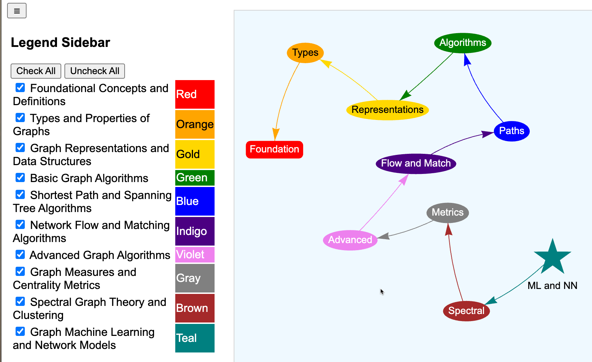
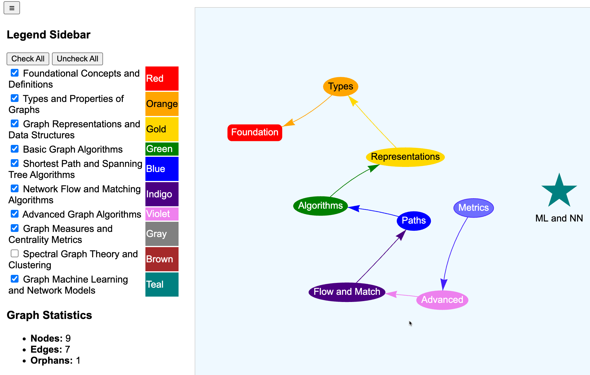

Legend Checkboxes
We had a user that wanted to only display specific groups in a learning graph. In order to do this, we need a way to add group-by-group selectors. So we asked ChatGPT if we could add checkboxes to the legend.

Run the Legend Checkboxes MicroSim
Prompt
I have a vis.js program that has a legend for the node types.
I would like to conditionally include specific nodes that are
in groups in the network graphs.
Using the following template, create a new version that puts
checkboxes in the legend in the sidebar.
The checkboxes will turn on and off the inclusion of each
group in the network.
Response
To implement checkboxes in the legend sidebar to control the visibility of specific groups in the network, I’ll modify your template to add checkboxes next to each group. The checkboxes will toggle the visibility of nodes in that specific group. When a checkbox is unchecked, nodes in that group will be hidden from the network graph; when checked, they will be displayed.
Explanation
Group and Checkbox Property Consistency
- Updated Node Groups: Each node's
groupproperty now matches the IDs of the checkboxes. For example, the node for "Foundation" hasgroup: 'Foundation'.
1 2 3 4 5 6 7 8 | |
- Checkbox IDs and
toggleGroupFunction: Theidattributes of the checkboxes match thegroupnames. ThetoggleGroupfunction now uses thegroupNameto reference both the checkbox and the node group.
1 | |
JavaScript Function to Toggle Group Visibility
1 2 3 4 5 6 7 8 | |
- Consistent Colors: The colors in the legend now match the colors assigned to the nodes. For example, "Flow and Match" uses
color: "indigo"and the legend reflects this withbackground-color: indigo.
1 | |
Testing the Fix:
- When you uncheck a checkbox in the legend, the corresponding nodes in the network graph should disappear.
- When you check the checkbox again, the nodes reappear.
Additional Notes:
-
Edge Visibility: If you need the edges connected to the hidden nodes to also be hidden, Vis.js handles this automatically when a connected node is hidden.
-
Multiple Nodes per Group: If you have more nodes in each group, this method will scale appropriately.
Example Legend Checkbox Program
Adding "Check All" and "Uncheck All" Buttons
Prompt
How can I add two buttons that will "Check All" and "Uncheck All"?
Response
ChatGPT Thought for 17 seconds
Certainly! To add "Check All" and "Uncheck All" buttons that control all the group checkboxes and update the network graph accordingly, we'll:
- Add two buttons labeled "Check All" and "Uncheck All" above the legend table.
- Implement two functions,
checkAllGroups()anduncheckAllGroups(), that will check or uncheck all the checkboxes and update the node visibility in the network graph. - Ensure that the network graph updates efficiently when these buttons are clicked.
Here's the updated code with the new buttons and functions
Explanation of Changes:
1. Added "Check All" and "Uncheck All" Buttons:
1 2 3 4 | |
checkAllGroups() and uncheckAllGroups() when clicked.
2. Implemented checkAllGroups() Function:
1 2 3 4 5 6 7 8 9 10 | |
"group".
- Loops through each checkbox:
- If it's not already checked, it sets checkbox.checked = true.
- Calls toggleGroup() with the group name to update node visibility.
3. Implemented uncheckAllGroups() Function:
1 2 3 4 5 6 7 8 9 10 | |
- Purpose: Unchecks all the group checkboxes and hides all corresponding nodes.
- How it Works:
- Selects all input elements with IDs starting with
"group". - Loops through each checkbox:
- If it's checked, it sets
checkbox.checked = false.- Calls
toggleGroup()with the group name to update node visibility.
- Calls
- If it's checked, it sets
- Selects all input elements with IDs starting with
4. Optimizing Node Updates:
- By only calling
toggleGroup()when a checkbox state changes (from unchecked to checked or vice versa), we avoid unnecessary updates. - The
toggleGroup()function handles updating the node visibility based on the current state of the checkbox.
5. Ensuring Consistent Group Names:
- The
replace('group', '')method extracts the group name from the checkbox ID (e.g., from"groupFoundation"to"Foundation"). - This ensures that
toggleGroup()receives the correct group name to update node visibility.
How It Works:
-
"Check All" Button:
- When clicked, all checkboxes become checked.
- For each checkbox that was previously unchecked,
toggleGroup()is called to set the corresponding nodes as visible. - The network graph updates to show all nodes.
-
"Uncheck All" Button:
-
When clicked, all checkboxes become unchecked.
- For each checkbox that was previously checked,
toggleGroup()is called to hide the corresponding nodes. - The network graph updates to hide all nodes.
-
Individual Checkboxes:
-
The existing functionality for individual checkboxes remains unchanged.
- Checking or unchecking a group checkbox will show or hide nodes in that group.
Additional Notes:
-
Edge Visibility:
- Vis.js automatically handles edge visibility. If both connected nodes are hidden, the edge is also hidden.
- If one node is visible and the other is hidden, the edge will still be displayed, connected to the visible node.
-
Scalability:
-
This approach works efficiently even if more groups or nodes are added.
- The functions dynamically select checkboxes and nodes based on IDs and group names.
-
Accessibility:
-
The buttons and checkboxes are standard HTML elements, ensuring compatibility with assistive technologies.
Testing the Implementation:
-
Initial State:
- All checkboxes are checked.
- All nodes are visible in the network graph.
-
Uncheck All:
-
Click the "Uncheck All" button.
- All checkboxes become unchecked.
- All nodes are hidden in the network graph.
- Check All:
-
Click the "Check All" button.
- All checkboxes become checked.
-
All nodes reappear in the network graph.
-
Combination:
-
Uncheck individual checkboxes to hide specific groups.
- Use "Check All" to restore visibility to all groups.
Summary of Check All and Uncheck All
By adding the "Check All" and "Uncheck All" buttons and implementing the corresponding functions, users can easily control the visibility of all node groups in the network graph with a single click. This enhancement improves the usability of the application, especially when dealing with a large number of groups.
Adding Network Statistics

When we disable some nodes with the checkboxes, we often need to know that some nodes are now disconnected from the network. We can see the number of orphaned nodes by running a simple query on the graph. Here is how it works.
Graph Statistics Prompt
Sample Prompt
How would I modify the code to display the network statistics
in the sidebar such as number of nodes, number of edges and
number of orphaned nodes?
Use HTML in the sidebar under "Graph Statistics".
Sample Response
ChatGPT o1-preview Thought for 24 seconds
Certainly! To display dynamic network statistics---such as the number of nodes, number of edges, and number of orphaned nodes---in the sidebar under "Graph Statistics", we'll need to:
- Add placeholders in the HTML for the statistics.
- Write a function
updateStatistics()that calculates these statistics based on the current state of the network. - Call
updateStatistics()whenever the network changes (e.g., when nodes are shown or hidden via the checkboxes).
Below is the updated code with the necessary modifications:
1 2 3 4 5 6 7 8 9 10 11 12 13 14 15 16 17 18 19 20 21 22 23 24 25 26 27 28 29 30 31 32 33 34 35 36 37 38 39 40 41 42 43 44 45 46 47 48 49 50 51 52 53 54 55 56 57 58 59 60 61 62 63 64 65 66 67 68 69 70 71 72 73 74 75 76 77 78 79 80 81 82 83 84 85 86 87 88 89 90 91 92 93 94 95 96 97 98 99 100 101 102 103 104 105 106 107 108 109 110 111 112 113 114 115 116 117 118 119 120 121 122 123 124 125 126 127 128 129 130 131 132 133 134 135 136 137 138 139 140 141 142 143 144 145 146 147 148 149 150 151 152 153 154 155 156 157 158 159 160 161 162 163 164 165 166 167 168 169 170 171 172 173 174 175 176 177 178 179 180 181 182 183 184 185 186 187 188 189 190 191 192 193 194 195 196 197 198 199 200 201 202 203 204 205 206 207 208 209 210 211 212 213 214 215 216 217 218 219 220 221 222 223 224 225 226 227 228 229 230 231 232 233 234 235 236 237 238 239 240 241 | |
Explanation of Modifications:
Step 1. Added Placeholders in the HTML for Statistics:
1 2 3 4 5 6 | |
<span> elements having IDs (nodeCount, edgeCount, orphanCount).
- These elements will be updated dynamically via JavaScript.
Step 2. Created updateStatistics() Function:
```javascript function updateStatistics() { // Get all nodes and edges var allNodes = nodes.get(); var allEdges = edges.get();
1 2 3 4 5 6 7 8 9 10 11 12 13 14 15 16 17 18 19 20 21 22 23 24 25 26 27 28 | |
```
-
Purpose: Calculates the current number of visible nodes, visible edges, and orphan nodes, and updates the HTML elements accordingly.
-
Steps in the Function:
- Get All Nodes and Edges: Retrieve all nodes and edges from the DataSets.
- Filter Visible Nodes: Use
filterto get nodes that are not hidden. - Filter Visible Edges: Only include edges where both the
fromandtonodes are visible. - Calculate Counts: Count the number of visible nodes and edges.
- Identify Orphan Nodes:
- Create a
Setof node IDs that are connected via visible edges. - An orphan node is one that is visible but not included in the
connectedNodeIdsset.
- Create a
- Update HTML Elements: Set the
textContentof the span elements to display the calculated counts.
Step 3. Calling updateStatistics() Appropriately:
- After Network Initialization:
1 2 | |
toggleGroup() Function:
1 2 3 4 | |
- Updates statistics whenever a group is toggled (shown or hidden).
- No Need to Call
updateStatistics()incheckAllGroups()anduncheckAllGroups(): - Since
toggleGroup()is called for each group within these functions andupdateStatistics()is called withintoggleGroup(), it's unnecessary to call it again. - This avoids redundant calculations and ensures efficiency.
How It Works:
- Initial Load:
- The statistics display the total number of nodes and edges in the network.
- Orphan nodes are calculated based on the current visibility of nodes and edges.
- When Nodes Are Hidden/Shown:
- Toggling checkboxes hides or shows nodes.
- Edges connected to hidden nodes are also hidden automatically by Vis.js.
- The
updateStatistics()function recalculates the counts and updates the sidebar. - Orphan Nodes:
- An orphan node is a visible node with no visible edges connected to it.
- As nodes or edges are hidden, the number of orphan nodes may increase.
Testing the Implementation:
-
Check All Groups:
-
Click "Check All" to ensure all nodes and edges are visible.
- The statistics should display the total number of nodes and edges.
-
Orphan count should be
0if all nodes are connected. -
Uncheck All Groups:
-
Click "Uncheck All" to hide all nodes.
-
Statistics should show
0nodes,0edges, and0orphans. -
Toggle Individual Groups:
-
Uncheck individual groups to hide specific nodes.
- Statistics should update to reflect the current counts.
- Observe how the number of orphans changes as nodes become disconnected.
Additional Notes:
- Edge Visibility:
- Vis.js hides edges automatically when connected nodes are hidden.
-
Edges are only considered visible if both connected nodes are visible.
-
Scalability:
- The
updateStatistics()function works dynamically with any number of nodes and edges. -
If you add more nodes or edges, the statistics will adjust accordingly.
-
Performance:
- The use of
SetforconnectedNodeIdsimproves performance when checking for orphan nodes. - Filtering and mapping functions are efficient for datasets of moderate size.
Summary of Dynamic Networks Statistics
By adding dynamic network statistics to the sidebar, users can gain insights into the structure and connectivity of the network at any given time. The statistics update automatically in response to user interactions, enhancing the interactivity and usefulness of the visualization.